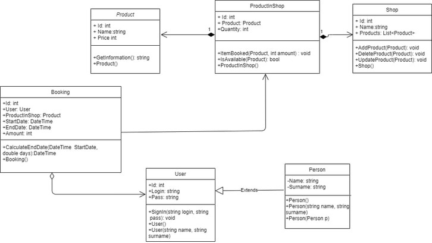
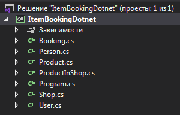
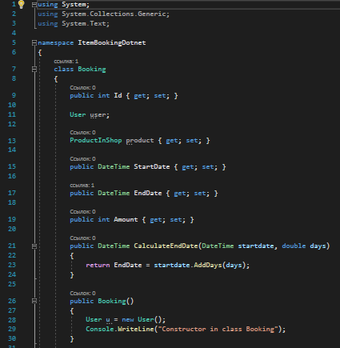
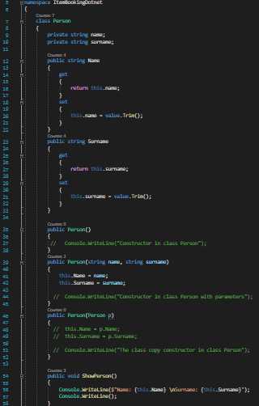
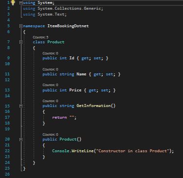
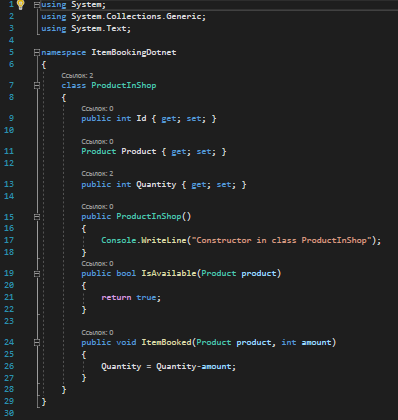
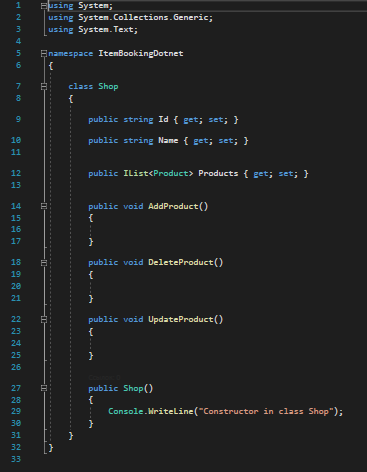
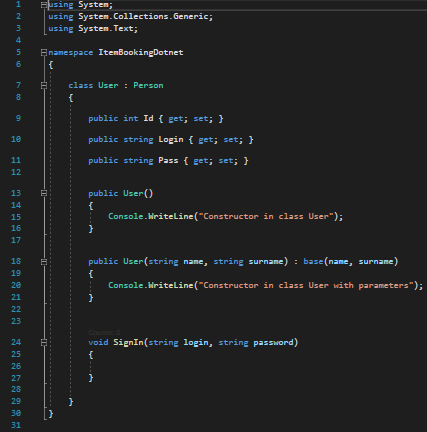
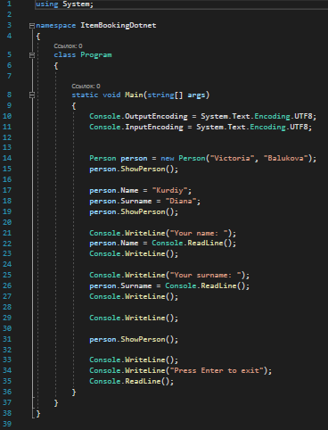
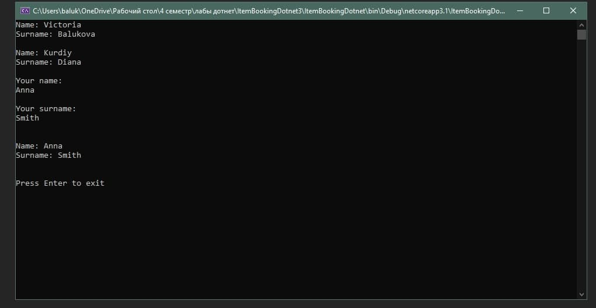

Бригада №10 (2020-2021)
Тема: Бронювання товарів в мережі магазинів
Лабораторна робота №3
Тема: ВИКОРИСТАННЯ ВЛАСТИВОСТЕЙ. АВТОМАТИЧНІ ВЛАСТИВОСТІ. СКОРОЧЕНИЙ ЗАПИС ВЛАСТИВОСТЕЙ.
Мета: Здійснити введення та виведення даних закритих полів класів, застосовуючі методи-властивості.
1. Доповнити програмну реалізацію класів методами-властивостями класів, введення та виведення даних закритих полів класів.
2. Протестувати програму, шляхом запуску програми, введенням та виведенням значень закритих полів.
Наш проект розташований в папці на GoogleDisk.
Проект доступний за посиланням
Виконуючи дані лабораторні роботи, в якості середовища програмування ми використовували Visual Studio Community 2019.
У даному проекті закриті поля(string name, string surname) були описані в класі Person, доступ до яких був реалізований за допомогою властивостей string Name, string Surname відповідно. Такий механізм був розроблений для того, щоб провалідувати дані користувача та уникнути помилки при введенні.


Програмний код класу Booking
Програмний код класу Person
Програмний код класу Product
Програмний код класу ProductInShop
Програмний код класу Shop
Програмний код класу User
Програмний код класу Program
Результат виконання програми
Проект доступний за посиланням
Запустити ехе-файл
Під час виконання лабораторної роботи ми реалізували введення та виведення даних закритих полів класів, застосовуючи методи-властивості. Також доповнили реалізацію класів методами-властивостями, які реалізують введення та виведення даних закритих полів класів. А також протестували програму шляхом запуску, введенням та виведенням значень закритих полів.